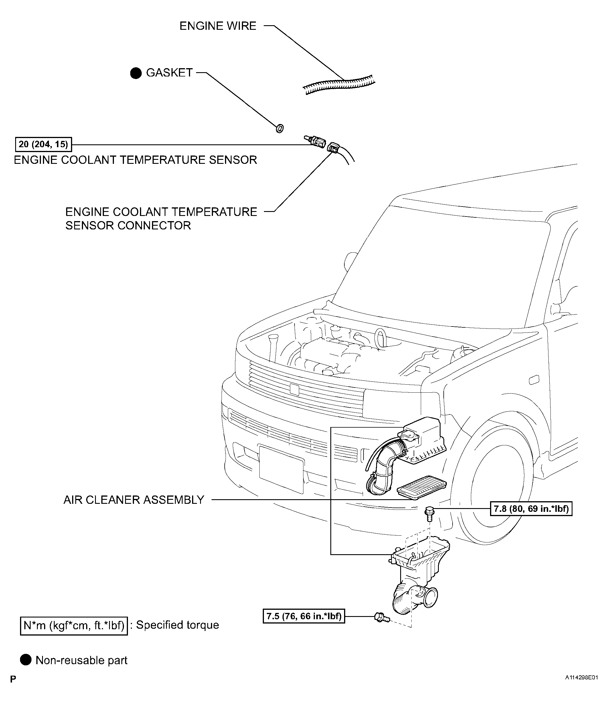

Home
>>
Scion
>>
2006
>>
xB Standard
>>
Repair and Diagnosis
>>
Engine Performance
>>
Engine Control Systems
>>
Engine Control System (1NZ-FE)
>>
Engine Coolant Temperature Sensor
>>
Components
Engine Coolant Temperature Sensor: Components
Fig 1: Identifying Engine Coolant Temperature Sensor Components

Courtesy of © TOYOTA, LICENSE AGREEMENT TMS1002